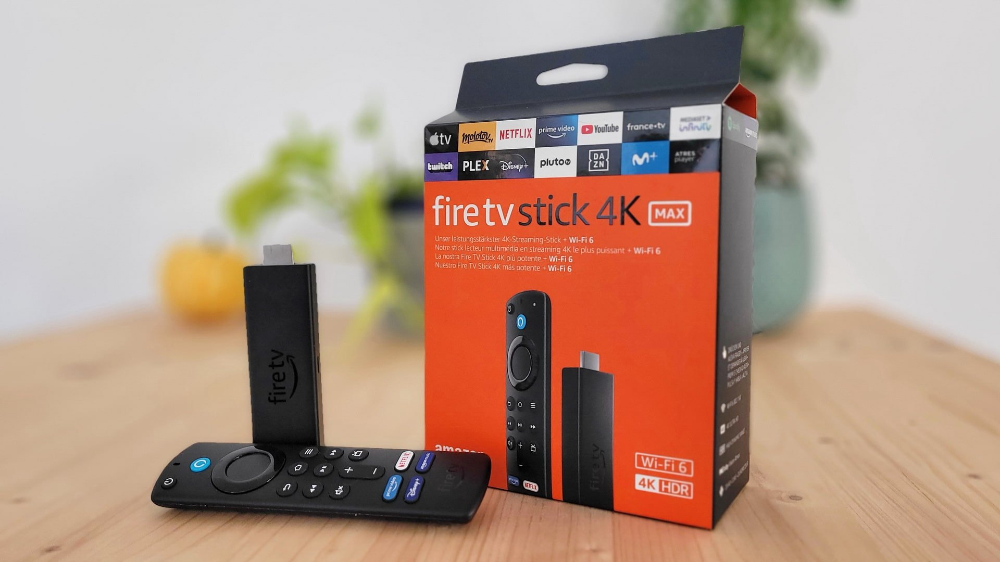

Descripción
El Amazon Fire TV Stick 4K Max es un dispositivo de transmisión de medios que ofrece una experiencia de entretenimiento de alta calidad en tu televisor.
Caracteristicas 
Las características del Amazon Fire TV Stick 4K Max son:
- Resolución 4K Ultra HD:
- Compatibilidad con HDR:
- Rendimiento mejorado:
- Wi-Fi 6:
- Control remoto avanzado:
- Acceso a una amplia variedad de aplicaciones: Puedes acceder a una amplia gama de aplicaciones de transmisión populares, como Netflix, Prime Video, Disney+, Hulu y muchas otras, lo que te permite ver contenido de diferentes servicios de streaming.
- Almacenamiento de 8 GB:
- Dolby Atmos Audio:
Admite la reproducción de contenido en resolución 4K Ultra HD, lo que te permite disfrutar de una calidad de imagen excepcionalmente nítida y detallada en televisores compatibles.
Admite formatos de alto rango dinámico (HDR) como HDR10 y HDR10+, lo que proporciona una gama más amplia de colores y un mayor contraste en las imágenes para una experiencia de visualización mejorada.
Equipado con un procesador de cuatro núcleos de 1.8 GHz, lo que proporciona un rendimiento más rápido y una experiencia de transmisión más suave al cargar aplicaciones y contenido.
Compatible con Wi-Fi 6, lo que garantiza una conexión inalámbrica más rápida y estable a tu red Wi-Fi, lo que es crucial para la transmisión de contenido en 4K y para evitar búfering.
Viene con el nuevo control remoto Alexa Voice Remote de tercera generación, que incluye botones de acceso rápido para tus aplicaciones favoritas y controles mejorados para facilitar la navegación y el control de tu experiencia de entretenimiento.
Tiene 8 GB de almacenamiento interno para que puedas descargar aplicaciones y juegos según tus preferencias.
Ofrece soporte para audio Dolby Atmos, lo que proporciona una experiencia de audio envolvente y de alta calidad cuando utilizas dispositivos y servicios compatibles.
Ficha Técnica
Comparación de la ficha técnica del Amazon Fire TV Stick 4K Max y del Amazon Fire TV Stick 4K
| Amazon Fire TV Stick 4K | Amazon Fire TV Stick 4K Max | |
|---|---|---|
| PROCESADOR | Quad-core 1.7 GHz | Quad-core 2.0 GHz |
| ALMACENAMIENTO | 8 GB | 16 GB |
| VÍDEO | Hasta 4K (2160p) Dolby Vision, HDR, HDR10+ y HLG | Hasta 4K (2160p) Dolby Vision, HDR, HDR10+ y HLG |
| SISTEMA OPERATIVO | Fire OS | Fire OS |
| AUDIO | Dolby Atmos | Dolby Atmos |
| CONECTIVIDAD | WiFi 6 | WiFi 6E Bluetooth 5.2 |
| OTROS | Mando por voz Alexa | Mando por voz Alexa Enhanced |
| DIMENSIONES Y PESO | 99 x 30 x 14 mm 43,5 g | 99 x 30 x 14 mm 43,5 g |
| PRECIO | 69,99€ | 79,99€ |